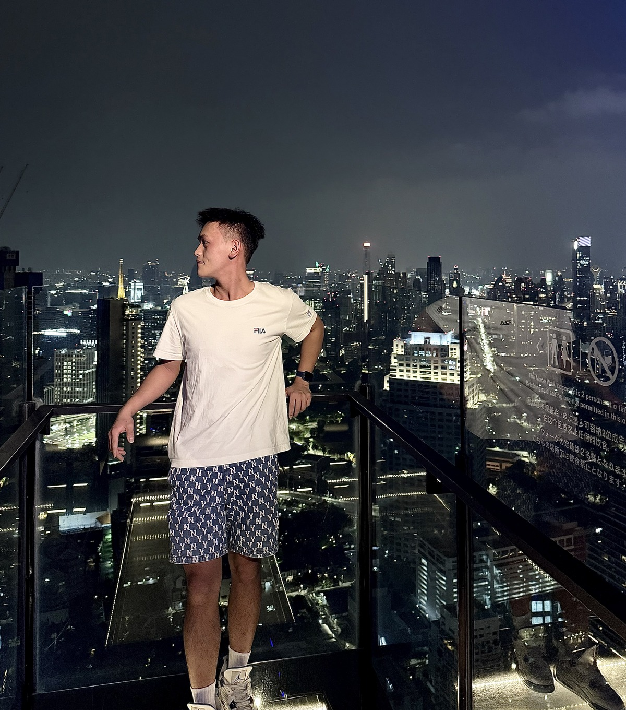
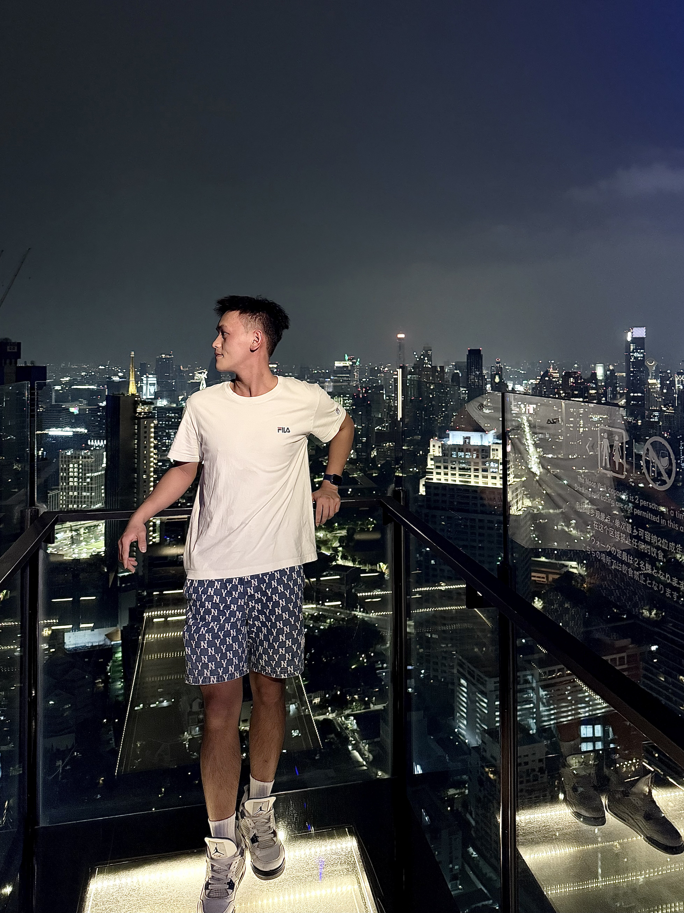
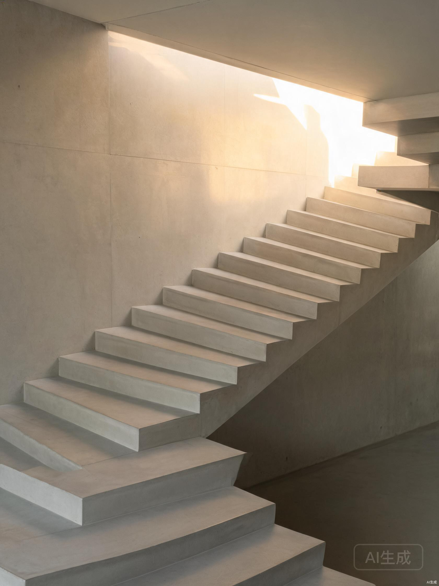

Choose your language to continue. Your choice will be remembered for the next visit.
A quiet corner of the internet — the light that folds across walls, the stillness before laughter, and the geometry of empty streets.

“Collecting light, one frame at a time.”
I'm Ethan Kang. I move between cities and screens, chasing the small details that most people walk past — the way light folds across a wall at five in the afternoon, the pause before someone laughs, the geometry of an empty street.
This is where I keep those things. Part diary, part gallery, part open door. Stay a while.
A rolling collection of frames — no captions, no order, just the things I wanted to remember.


The same person, in a few different places. Come say hello — I reply, eventually.